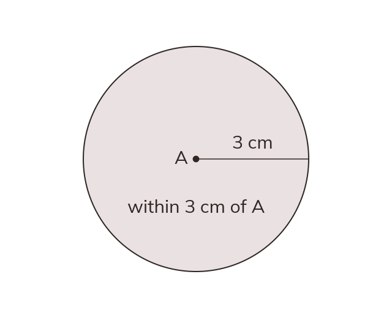

Exact distance vs region
An exact distance, like 'exactly cm from A', gives a line or curve. 'Within cm' gives a region bounded by that locus.
An exact distance ('exactly cm from A') gives a locus - a line or curve. An inequality ('at least cm', 'no more than cm', 'within cm') gives a region bounded by that locus - everywhere on one side of it (or between two loci).